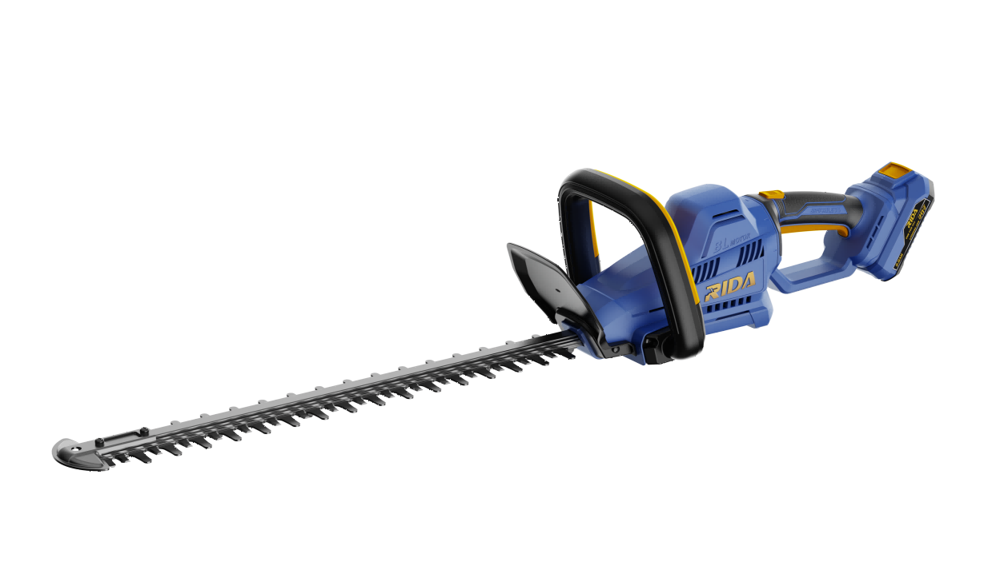

RIDA
Corta-sebes a bateria
Ferramenta RIDA sem fio de 20 V, desenvolvida para oferecer potência, mobilidade e facilidade de utilização em trabalhos profissionais e domésticos.
Voltage20V
Cutting Speed2800spm
Max Cutting Capacity25mm
Cutting Length520mm
Include